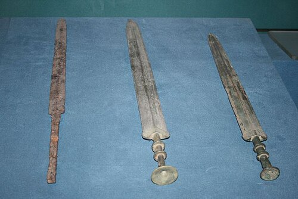
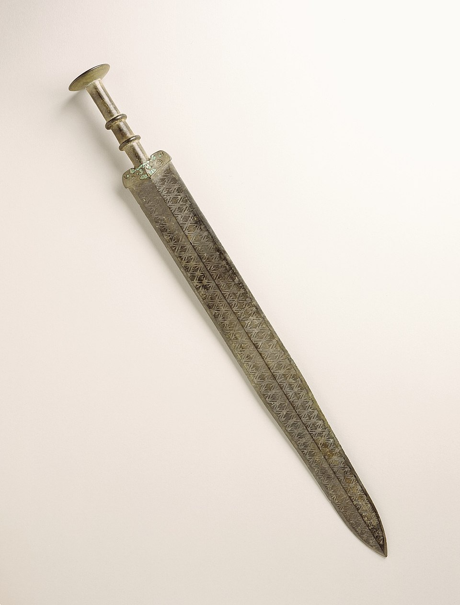
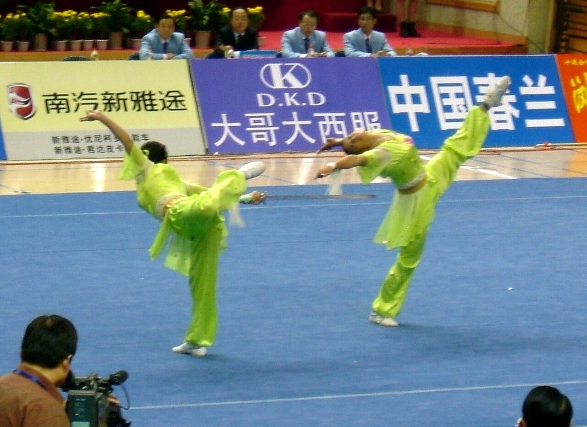
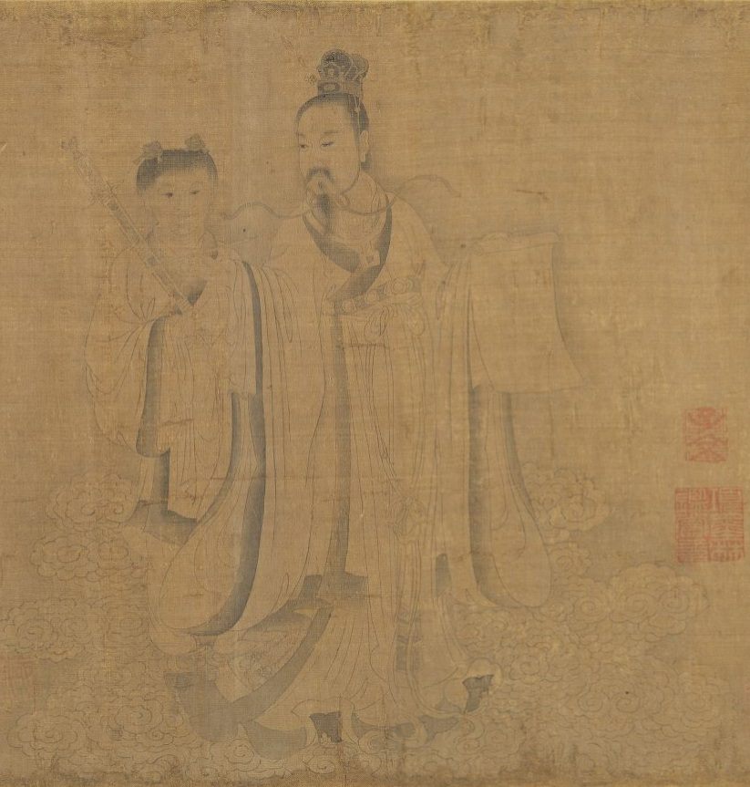

El jian (chino mandarín: [tɕjɛ̂n], chino: 劍, aproximación en inglés: /dʒjɛn/ jyehn, cantonés:
[kim˧]) es una espada recta de doble filo utilizada durante los últimos 2,500 años en China. Las
primeras fuentes chinas que mencionan el jian datan del siglo VII a. C., durante el período de
Primavera y Otoño, siendo uno de los primeros ejemplares la Espada de Goujian. Las versiones
históricas de una mano tienen hojas que varían entre 45 y 80 centímetros (18 a 31 pulgadas) de
longitud. El peso de una espada promedio con una hoja de 70 centímetros (28 pulgadas) sería
aproximadamente de 700 a 900 gramos (1.5 a 2 libras). También existen versiones más grandes de dos
manos utilizadas para entrenamiento en muchos estilos de artes marciales chinas.
Los practicantes profesionales de jian son llamados jianke (chino: 劍客; pinyin: jiànkè; literalmente
“invitados de la espada” o “espadachines”; un término que data de la dinastía Han).
En el folclore chino, el jian es conocido como “El caballero de las armas” y se considera una de las
cuatro armas principales, junto con el gun (bastón), el qiang (lanza) y el dao (sable). Estas
espadas también se conocen a veces como taijijian o “espadas de tai chi”, reflejando su uso actual
como armas de entrenamiento para practicantes de tai chi, aunque históricamente no existieron tipos
de jian creados específicamente para tai chi.
Jian
Longitud promedio: 70cm – 90cm
Peso aproximado: 0.7kg – 1.2kg
Tipo de hoja: Recta, doble filo
Uso principal: Corte y estocada
Partes del Jian
Una guarda o empuñadura protege la mano de una hoja oponente. Las formas de la guarda variaban, pero a menudo
tenían pequeñas alas o lóbulos que apuntaban hacia adelante o hacia atrás, estos últimos a veces con una
apariencia similar a un “as de espadas”. Los jian tempranos solían tener guardas muy pequeñas y simples. A
partir de los períodos Song y Ming, las guardas podían presentar formas zoomorfas o tener barras transversales y
gavilanes. Una minoría de jian tenía guardas en forma de disco, similares a las asociadas con el dao.
La empuñadura del jian puede acomodar el agarre de ambas manos o de una mano más dos o tres dedos de la otra.
Existían jian de dos manos de hasta 1.6 metros (63 pulgadas) de longitud, conocidos como shuangshou jian, aunque
no eran tan comunes como la versión de una mano. El mango más largo de dos manos podía utilizarse como palanca
para bloquear el brazo de un oponente si era necesario. Las empuñaduras generalmente son de madera acanalada o
están cubiertas con piel de raya, y una minoría está envuelta con cordón.
El extremo del mango terminaba en un pomo para equilibrar el arma, evitar que el mango se deslizara de la mano
si el agarre se aflojaba y para golpear o atrapar al oponente cuando se presentaba la oportunidad, como en
técnicas de “retirada”. Históricamente, el pomo se remachaba a la espiga de la hoja, manteniendo así como una
sola unidad sólida la hoja, la guarda, la empuñadura y el pomo. La mayoría de los jian del último siglo
aproximadamente se ensamblan con una espiga roscada sobre la cual se atornilla el pomo o una tuerca de pomo.
A veces se coloca una borla en la empuñadura. Durante la dinastía Ming estas solían pasar a través de un pomo
calado, y en la dinastía Qing a través de un orificio en la propia empuñadura; en las espadas modernas la borla
suele sujetarse al extremo del pomo. Históricamente es probable que se usaran como correas de seguridad,
permitiendo al portador conservar la espada durante el combate. Existen algunas formas de esgrima con espada que
utilizan la borla como parte integral de su estilo (a veces de forma ofensiva), mientras que otras escuelas
prescinden completamente de ella. El movimiento de la borla también pudo servir para distraer a los oponentes, y
algunas escuelas afirman además que antiguamente se incorporaban alambres metálicos o finos cordones de seda en
las borlas para dificultar la visión y causar sangrado cuando se pasaban por el rostro. En la actualidad, su uso
es principalmente decorativo.
La hoja en sí suele dividirse en tres secciones para aprovechar diferentes técnicas ofensivas y defensivas. La
punta de la hoja se llama jiànfeng y está destinada a estocadas, cortes y golpes rápidos. El jiànfeng
normalmente se curva suavemente hasta terminar en punta, aunque durante el período Ming eran comunes las puntas
con ángulos marcados. Algunos ejemplares antiguos tienen puntas redondeadas, aunque probablemente sea resultado
del desgaste. La sección central se llama zhongren o filo medio, y se utiliza para una variedad de acciones
ofensivas y defensivas, como cortes potentes, cortes de arrastre y desvíos. La parte de la hoja más cercana a la
guarda se llama jiàngen o raíz, y se usa principalmente para acciones defensivas; en algunos jian de períodos
tardíos, la base de la hoja se convertía en un ricasso. Estas secciones no necesariamente tienen la misma
longitud, siendo el jiànfeng de solo tres o cuatro pulgadas de largo.
Las hojas de jian generalmente presentan una ligera reducción de anchura hacia la punta (conocida como perfil
cónico), pero a menudo tienen una reducción considerable de grosor hacia la punta, de modo que el grosor de la
hoja cerca de la punta puede ser solo la mitad del grosor en la base. Los jian también pueden presentar un
afilado diferencial, donde la hoja se vuelve progresivamente más afilada hacia la punta, generalmente
correspondiente a las tres secciones de la hoja. La sección transversal de la hoja suele ser lenticular (con
forma de ojo) o de diamante aplanado, con una cresta central visible; los jian antiguos de bronce a veces tienen
una sección transversal hexagonal.
Materiales
Los jian originalmente se fabricaban de bronce y posteriormente de acero a medida que avanzó la
tecnología metalúrgica. Existen algunos jian, posiblemente ceremoniales, que están tallados a partir
de una sola pieza sólida de jade.
Las hojas tradicionales de jian suelen tener una construcción sanmei (de tres placas), que consiste
en colocar un núcleo de acero duro entre dos placas de acero más suave. La placa central sobresale
ligeramente de las piezas que la rodean, lo que permite obtener un filo muy afilado, mientras que el
lomo más blando protege el núcleo frágil. Algunas hojas tenían construcción wumei o de cinco placas,
en la que se añadían dos placas blandas más en la cresta central. Los jian de bronce a menudo se
fabricaban de manera algo similar: en este caso, una aleación con alto contenido de cobre se
utilizaba para formar un núcleo y un lomo resistentes, mientras que el filo se hacía con una
aleación con mayor contenido de estaño para lograr mayor agudeza, y luego se soldaba al resto de la
hoja.

Una espada de hierro y dos espadas de bronce del período de los Reinos Combatientes de
China.
A los herreros chinos a menudo se les atribuyen las tecnologías de forja que posteriormente llegaron a Vietnam,
Japón y Corea, permitiendo a los artesanos de esos lugares crear armas como la katana. Estas tecnologías
incluyen el plegado del metal, el uso de aleaciones insertadas y el endurecimiento diferencial del filo. Aunque
los japoneses recibirían mayor influencia del dao chino (espadas de un solo filo de diversas formas), las
primeras espadas japonesas conocidas como ken se basaban con frecuencia en el jian. La versión coreana del jian
se conoce como geom o gum, y estas espadas a menudo conservan características presentes en los jian de la época
Ming, como pomos calados y puntas con ángulos pronunciados.
En las escuelas de artes marciales se utilizan espadas de madera para el entrenamiento, por lo que la primera
experiencia de muchos estudiantes con un jian en la actualidad suele ser con una de estas armas. Antes de que
las escuelas fueran una forma formal de transmitir el conocimiento de la esgrima, los estudiantes podían
comenzar practicando con un simple palo de madera al entrenar con su maestro. En algunas sectas religiosas
taoístas, estas espadas de madera de práctica han adquirido un propósito ritual esotérico. Algunos afirman que
estas espadas de madera representan metafóricamente la disciplina de un estudiante avanzado.
Los jian contemporáneos suelen forjarse (dándoles forma con calor y martillo) y ensamblarse mediante métodos
mayormente tradicionales para el entrenamiento de practicantes de artes marciales chinas en todo el mundo. Estos
jian varían mucho en calidad y en precisión histórica. También, pueden ser falsificaciones (envejecidas
artificialmente y presentadas como antigüedades) para su venta a turistas y coleccionistas que no pueden
distinguirlas de las verdaderas antigüedades.
Historia

Jian de bronce del período de los Reinos Combatientes.
Originalmente similares a dagas de bronce de doble filo de diferentes longitudes, los jian
alcanzaron sus longitudes modernas aproximadamente hacia el año 500 a. C. Aunque existe una
variación considerable en la longitud, el equilibrio y el peso de los jian de distintos períodos,
dentro de cada época el propósito general del jian era ser un arma versátil de corte y estocada,
capaz de apuñalar y también de realizar cortes y tajos precisos, en lugar de especializarse en un
solo tipo de uso. Aunque las muchas formas y escuelas de esgrima con jian varían, el propósito y uso
general del arma se han mantenido.
Durante las dinastías Qin y Han, las dos primeras dinastías que unificaron China, los jian
provenientes de la entonces desaparecida dinastía Chu eran muy valorados. Chu se hizo especialmente
famoso por sus espadas después de conquistar el estado de Yue, que anteriormente era conocido por la
calidad de sus espadas y que atribuía sus técnicas de esgrima a una mujer del sur de ascendencia
desconocida conocida como Yuenü.
Entre los Guerreros de Terracota en la tumba de Qin Shi Huang, las figuras que representan a los
oficiales originalmente estaban armadas con jian fabricados con una aleación de cobre, estaño y
otros elementos, incluidos níquel, magnesio y cobalto. Varias espadas de bronce de doble filo han
sido recuperadas por arqueólogos modernos, pero la mayoría fueron robadas siglos atrás junto con las
armas de asta y los arcos de los soldados rasos.
Los portadores históricos del jian practicaban cortes de prueba llamados shizhan, en los que
ejercitaban sus habilidades sobre objetivos conocidos como caoren, o “hombres de hierba”. Estos
objetivos se fabricaban con bambú, paja de arroz o pequeños árboles jóvenes. Aunque es similar al
arte japonés del tameshigiri, el shizhan nunca se formalizó en la misma medida que este último.
Hoy en día muchas artes marciales chinas, como el tai chi, y sus practicantes todavía entrenan
extensamente con el jian, y muchos de ellos consideran que el dominio de sus técnicas es la
expresión física más alta de su kung fu. Entre las formas famosas de jian se encuentran Sancai Jian
(三才劍), Kunwu Jian (崑吾劍), Wudang Xuanmen Jian (武當玄門劍) y taijijian (太極劍).
La mayoría de los jian actuales son jian flexibles de tai chi o de wushu utilizados principalmente
con fines ceremoniales o de exhibición y no para combate real. Estas espadas tienen hojas
extremadamente delgadas o un alto grado de flexibilidad en comparación con los jian históricos de
calidad de campo de batalla, características destinadas a aumentar el atractivo visual y sonoro
durante una presentación de wushu. Estas mismas propiedades los hacen inadecuados para un combate
históricamente preciso.

Evento de pareja de jian en wushu en los 10.º Juegos Nacionales de China.
Uso Militar
Desde 2008, a los oficiales de la marina china se les entregan espadas ceremoniales que se asemejan al jian
tradicional. Cada espada tiene grabado en la hoja el nombre de su propietario después de graduarse de la
academia militar.
Taijijian y Práctica con Espada
En la actualidad, las formas de taijijian normalmente se practican como ejercicio, de manera similar al tai chi.
El entrenamiento se enfoca menos en la forma física del arma y más en desarrollar mayor equilibrio y
coordinación mediante la realización de movimientos lentos. Por esta razón, las espadas de tai chi utilizadas
para ejercicios cotidianos suelen ser diferentes de las espadas mencionadas anteriormente. En general, no son
peligrosas, tienen bordes redondeados sin filos afilados y a veces son retráctiles para mayor comodidad.
Cultura y Legado
“Los Ocho Inmortales cruzando el mar”. La figura en la parte inferior izquierda lleva un jian en la espalda.
Mito
La página detrás de Shao Siming sostenía el jian de Shao Siming. En la mitología china, las dos
deidades del destino son “Siming” (司命), es decir, Da Siming (大司命) y Shao Siming (少司命). El arma de
Shao Siming es un jian largo.
Taoísmo
“Los Ocho Inmortales cruzando el mar”. La figura en la parte inferior izquierda lleva un jian en la
espalda. Hay varios inmortales taoístas que están asociados con el jian. Un ejemplo es Lü Dongbin.
Budismo chino
“El bodhisattva Mañjuśrī (Ch: 文殊 Wénshū) a menudo es representado sosteniendo un jian, que entonces
se conoce como la “espada de la sabiduría”.
Wuxia
Los jian aparecen con frecuencia en la ficción y en las películas wuxia. Las espadas o las técnicas
utilizadas para manejarlas pueden ser efectiva o explícitamente sobrenaturales, y la búsqueda de
tales espadas o técnicas puede ser un elemento importante de la trama.

La página detrás de Shao Siming sostenía el jian de Shao Siming.